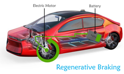
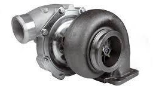
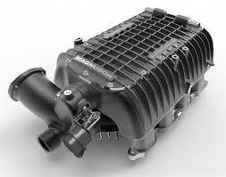
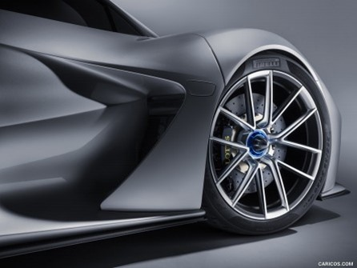
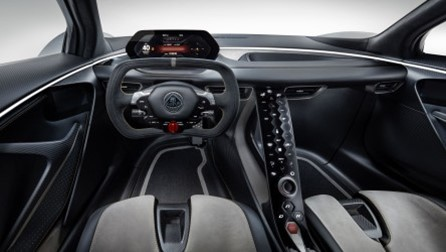
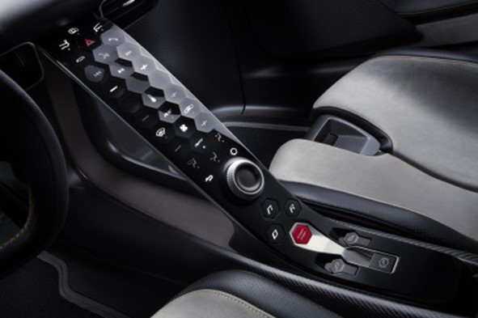
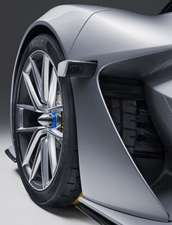
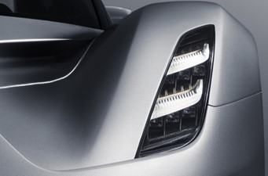
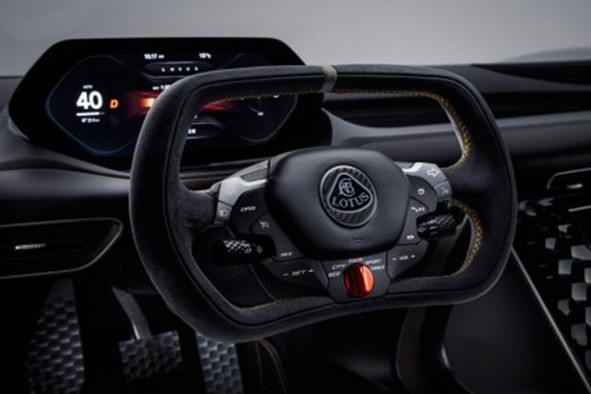

What is regenerative Braking?
Regenerative braking or regen braking is the recovery of energy by slowing down a moving object. It is most commonly used in hybrid vehicles which makes use of electric power. In its essence, it is the process of converting the kinetic energy of a vehicle into potential energy while slowing down the vehicle. Regen braking has become an essential part of the hybrid automotive industry increasing the range of these cars by upto 30%.
The Science Behind Regenerative Braking:
Regen braking comes in several forms albeit having the same principle i.e. to convert kinetic to potential energy. Let us look at some of the different types.
The first and most common form of regen braking is the conversion of kinetic energy to electrical energy via an AC induction motor. The principle behind this method is that an induction AC motor acts like a generator when used in reverse. This system is made use in cars such as the Tesla and Prius.
The second most commonly used form is by converting the kinetic energy to mechanical energy via a flywheel. In this method the driveshaft turns a large heavy wheel called a flywheel. The inertia of the rotating flywheel can then be used to boost the vehicle at a later time. This method is most commonly used in the KERS (Kinetic Energy Recovery System) system of Formula 1 cars.
Another system that is sometimes used is hydraulic braking. In this method, the kinetic energy is used to compress a gas such as Nitrogen gas. The energy stored in the compressed gas is then used to provide energy at a later time. This method has its advantages and disadvantages. The advantages being that it can store energy for long periods of time and the disadvantage being that compressing the gas is a slow process which affects the effectiveness of this system.
Regenerative Braking vs Regular Braking:
Regenerative braking is not an alternative for regular braking. It is simply a method of recycling the kinetic energy which would otherwise be lost. Although regenerative braking slows down a car, it will not bring a car to a standstill in a short period. Although regenerative braking has it’s disadvantages, it’s advantages far outweigh them. Today it has become an essential part of any electric or hybrid car which is introduced in the market. All in all, we can confidently say that regenerative braking is here to stay!
TURBOCHARGERS
It is a forced induction system that uses exhaust gas energy to compress the air from the atmosphere and sends it to the engine cylinder. The compressed air is rich in oxygen and so the quantity of the fuel entering into the cylinder is doubled. Now the fuel burnt into the cylinder produces double power as it was producing without the turbocharger.
HOW DOES ONE WORK?
If you know how a jet engine works, you're halfway to understanding a car's turbocharger. A jet engine sucks in cold air at the front, squeezes it into a chamber where it burns with fuel, and then blasts hot air out of the back. As the hot air leaves, it roars past a turbine that drives the compressor at the front of the engine. This is the bit that pushes the air into the engine to make the fuel burn properly. The turbocharger on a car applies a very similar principle to a piston engine. It uses the exhaust gas to drive a turbine. This spins an air compressor that pushes extra air into the cylinders, allowing them to burn more fuel each second. That's why a turbocharged car can produce more power. A supercharger is very similar to a turbocharger, but instead of being driven by exhaust gases using a turbine, it's powered from the car's spinning crankshaft. That's usually a disadvantage: where a turbocharger is powered by waste energy in the exhaust, a supercharger actually steals energy from the car's own power source, which is generally unhelpful.
TYPES OF TURBOCHARGERS
Single-Turbos
Single turbochargers are what most people think of as turbos. By differing the size of the elements within the turbo, completely different torque characteristics can be achieved. Large turbos provide higher levels of top end power, whilst smaller turbos can spool faster and provide better low-end power. They are a cost-effective way of increasing engine power and efficiency, and as such have become increasingly popular, allowing smaller engines to increase efficiency by producing the same power as larger naturally-aspirated engines, but with a lower weight. They do however tend to work best within a narrow RPM range, and drivers will often experience ‘turbo-lag’ until the turbo starts to operate within its peak rev band.
Twin-Turbo
As the name implies twin-turbos mean adding a second turbocharger to an engine. In the case of V6 or V8 engines, this can be done by assigning a single turbo to work with each cylinder bank. Alternatively, one smaller turbo could be used at low RPMs with a larger turbo for higher RPMs. This second configuration (known as twin sequential turbocharging) allows for a wider operating RPM range, and provides better torque at low revs (reducing turbo lag), but also gives power at high RPMs. Unsurprisingly, having two turbos significantly increases the complexity and associated costs.
Twin-Scroll Turbo
Twin-scroll turbochargers require a divided-inlet turbine housing and exhaust manifold that pairs the correct engine cylinders with each scroll. independently. For example, in a four-cylinder engine (with a firing order 1-3-4-2), cylinders 1 and 4 might feed to one scroll of the turbo, while cylinders 2 and 3 feed to a separate scroll. This layout provides more efficient delivery of exhaust gas energy to the turbo, and results and helps provide denser, purer air into each cylinder. More energy is sent to the exhaust turbine, meaning more power. Again, there is a cost penalty for addressing the complexity of a system requiring complicated turbine housings, exhaust manifolds and turbos.
SUPERCHARGERS
What is a Supercharger?
It is also a forced induction system that compresses the air and sends it to the engine cylinder. It is generally placed on the top of the engine and directly connected to the engine crankshaft for its working. It doubles the power of the engine. They are simple in design and installation. They can work on low rpm and it’s spin speed is up to 50,000 rpm. It is more reliable and has negligible lag.
HOW DOES ONE WORK?
While a turbocharger uses wasted exhaust gases to produce more power, superchargers operate off a different part of the engine. Superchargers are powered mechanically by the belt or chain that goes to the crankshaft. They force more air into the engine so that more fuel can be burned, which in turn creates more energy. Superchargers increase air intake by compressing the air above atmospheric pressure.
A supercharger draws its power directly from the crankshaft. Most of them use an accessory belt, which is wrapped around a pulley that is connected to a drive gear. Once the drive gear rotates, it rotates the compressor gear. The compressor's job is to draw in more air and squeeze it into a smaller space. This is then discharged into the intake manifold.
| S.No | TURBOCHARGER | SUPERCHARGER |
|---|---|---|
| 1. | Turbocharger is a forced induction system that compresses the atmospheric gases and sends it to the engine cylinder. | Supercharger is also a forced induction system. It compresses the atmospheric air and sends it to the engine cylinder. |
| 2. | It uses exhaust gases for its energy. | It is connected to the crankshaft of the engine for its energy. |
| 3. | It is not directly connected to the engine. | It is directly connected to the engine through a belt. |
| 4. | It has smog altering equipment which helps in lowering the carbon emission. | It doesn’t have a wastegate, so the smog emits from the supercharger. |
| 5. | It spins with a speed upto 150000 rpm. | It spins with a speed upto 50000 rpm. |
| 6. | It is much quieter than a supercharger. | It is not so quiet. |
| 7. | It is less reliable. | It is more reliable. |
| 8. | Maintenance is not easy. | Maintenance is easy. |
| 9. | Turbocharger delivers its boost better at high rpm. | Superchargers can deliver their boost at lower rpm. |
| 10. | It is more efficient. | It is less efficient. |
| 11. | The compressed air in the turbocharger has a high temperature. | The compressed air in the supercharger has less temperature. |
| 12. | It requires an intercooler for the compressed air to lower its temperature. | It may or may not require an intercooler. But in some types, it requires an intercooler. | 13. | It is more complex. | It is less complex. |
| 14. | It has a lag problem due to a discontinuous supply of energy. | It has a negligible lag problem because of the continuous supply of energy by the crankshaft. |
| 15. | The compressor is rotated by the turbine. | The compressor is rotated by the engine crankshaft through a belt. |
The newest offering in lotus' lineup is a much welcomed electric hypercar. Lotus has a controversial history of nearly going bankrupt before being bought by another company, at the time of writing this report they are owned by the Chinese firm Geely. Regardless, Lotus cars are one of the most sought after by car enthusiasts, not known for breaking records but providing the thrill and joy of driving their peppy sports cars.
The Evija claims to deliver this thrill with the help of its electric drivetrain capable of putting out crazy numbers. This is the case with most electric cars now, due the tremendous response and torque advantage that the electric motor brings to the world of automobiles. It was unveiled in July 2019 and made headlines ever since. only 130 units will ever be produced and is said to cost around 1.7 to 2.04 million pounds with a reservation fee of 250K pounds.
The Etymology of 'Evija' can be traced back to the Biblical Hebrew character חי which means 'alive'. Interestingly the initial letters spell out EV, coincidence! I think not.
The Electric Heart (Engine)
The Evija uses an electric powertrain provided by I ntegral Powertrain. This includes four high-power density electric motors which are fed power through the inverter which uses the industry leading silicon carbide IGBTs for great power output range and efficiency while also being more thermally stable. The inverter and motor are packaged in a single cylindrical unit. All four wheels are connected to the motors via a single-speed epicyclic transmission which enables four-wheel drive. The electric powertrain is capable of outputting 2000 PS (or 1970 hp) and 1700 Nm of torque. The performance figures suggest a 0 to 100 km/h in under 3 seconds while reaching a speed of 299 km/h (186 mph) in under 9 seconds and has a rated top speed of 320 km/h ( 200 mph).
Lotus was collaborating with Williams Advanced Engineering team for the Evija's drivetrain until earlier this year when the partnership got terminated, with WAE citing unpaid invoices while Lotus stating issues with delivery, nevertheless this won't be discussed any further.Regardless, this along with the ongoing pandemic have pushed the initial delivery date to mid 2021. The four motors enable true torque vectoring. The car uses Pirelli Trofeo R s and is equipped with carbon ceramic disc brakes.
The Evija claims to have the fastest charging EV battery, with a peak charging rate of 800 kW. It's important to note that there is a charging network that actually provides such a high rate yet. Lotus claims that it will allow the Evija to fully charge in a matter of 9 minutes. With the current high wattage (pun-not-intended) 350 kW chargers, it will be able to charge in 18 minutes to deliver a range of 400 kms. This may sound impressive at first but it should be noted that the battery pack capacity which was developed in partnership with WAE is a mere 70 kWh giving it a range of 215 miles according to the WLTP cycle which unfortunately seems to give a conservative estimate around the 100 to 300 mile range (again pun-not-intended) , but if the Porsche Taycan has taught us anything it's that it may just be able to consistently pull off this 200 mile range in most driving conditions. But the decision to use a high-power rate but low range battery pack is a part of the whole Lotus experience, as previously stated, Lotus cars are built around the driver and characteristic of this driving experience includes its nimbleness which is accomplished here with a lighter overall body as it is the most lightest EV hypercar coming at only 1750 kg (which is heavier than earlier models) although this stat seems to be lowering even more.
Inner Beauty (The Interior)
The interior consists of carbon bucket seats and a signature 'floating dashboard'. The steering wheel is heavily inspired by F1 and the gauge cluster is a screen with multiple configurations to show telemetry and media settings. The center console stack has continuous honeycomb-like button engravings with one rotary dial to control the gauge screen. This honeycomb pattern is also continued on the pedals. Being a Lotus the engineers clearly wanted the driver to feel in control of the car, one major key factor that allows for this is the proximity of the front windshield to the front is very small. There also seems to be a growing popularity of camera based side mirrors to reduce the drag coefficient of performance cars. While car mirrors are ignorable in most cases, at high speeds they offer a significant amount of aerodynamic drag. The mirror camera outputs to two screens inside the car angled towards the driver similar to the Audi e-tron. cameras retract to give a clean and flush look, although it may also provide an extra aerodynamic advantage in conjunction with the DRS system (probably with a push of a button). The battery is situated behind the seats and as always the weight distribution is decided on the placement of the battery pack. The premium feel of the car is complemented by the use of alcantara padded seats.
 Additional Features
 The lights are laser based and Lotus claims to offer the world's-first laser lighting for both main and dipped beams. These light modules are produced and supplied by OSRAM Continental, which offer all the benefits of laser lighting while keeping the entire module compact, energy-efficient, and beautiful.
Driving Moods (Modes)
The driving mode selector is situated on the steering wheel in an F1 style red dial. There are five modes to choose from:
| S.No | Driving Modes | Functions |
|---|---|---|
| 1. | Range | the power of the car is capped at 1000 hp and the torque is limited to 800 Nm, the rear motors alone will drive the car, which is another benefit of having individual power units to each wheel |
| 2. | City | as the name suggests, this mode allows for greater maneuverability in city conditions, this includes increasing the strength of the regen braking, the power figures are similar to range mode and the wing will adjust itself to a drag efficient state |
| 3. | Tour | the power output will be limited to 1400 hp while the torque will be pushed to its limit of 1700 Nm, the driver may further choose between rear-wheel drive and all-wheel drive and even choose to raise the car's height to go over potential speed bumps |
| 4. | Sport | the power limit is now set to 1700 hp and the stability and traction control starts to operate at full potential through aggressive torque vectoring |
| 5. | Track | This is the mode that unlocks the full 2000 PS of power and 1700 Nm of torque, stability control and traction control are also in full operation enabling the car to shoot out of corners as fast as possible |
Lotus clearly wanted to make the car somewhat of a daily driver, and the diversity in the modes along with the scalability and power of the motors allow for an extremely dynamic car. This is the sort of control the electric motors bring, lowering most of the mechanical hassle that comes with a gas car that claims to do the same.
Final Take
It's great to see Lotus back in action after its acquisition by Geely, and especially the fact that they look towards the future with their first electric hyper-car, it sets a truly thrilling tone for the future of Lotus cars providing excellent performance with all the driving capabilities. Lotus has been actively testing the car at their Hethel test track in UK, in fact they offered Lord March, the 25 year old son of the event's host and the Duke of Richmond, a ride in the prototype version of the Evija at the Goodwood Track in preparation of the Goodwood Speed Week.
In many parts of the world, June is the ‘Gay Pride Month’, dedicated to celebrating the LGBTQ community and their struggle against discrimination and social ostracisation. Many countries organise month-long activities and initiatives that culminate into a loud crescendo of the ‘Gay Pride Parade’, usually held in the end of June. Let’s talk about the motorsport racers who have been a part of the lgbt community and faced all the challenges with strength.
1.Mike Beuttler
Michael Simon Brindley Bream Beuttler (13 April 1940 – 29 December 1988) was a British Formula One driver. He was born in Cairo, Egypt. He was a talented Formula Three driver from the late 1960s, who then graduated to Formula Two and then to Formula One in 1971. Beuttler is often described as the first openly gay Formula One driver, although former Autosport editor and friend Ian Phillips has described Beuttler as "semi-closeted", adding "I’m not sure anybody really knew. We all just kind of suspected it. Because people weren’t open about being gay in those days and he took this lovely girlfriend to all the races which I suspect was just to distract because people didn’t come out as being gay in those days." Beuttler remains the only known LGBT+ male driver to have raced at that level to this day.He eventually moved to the United States, where he died of complications resulting from AIDS in 1988, in Los Angeles, aged 48.
2.Roberta Elizabeth Marshall Cowell
Roberta Elizabeth Marshall Cowell (8 April 1918[1] – 11 October 2011) was a British racing driver and Second World War fighter pilot. She was the first known British trans woman to undergo sex reassignment surgery.In 1946, she founded a motor-racing team and competed in events across Europe, including the Brighton Speed Trials and the Grand Prix at Rouen-Les-Essarts.In 1948, Cowell separated from her wife and, suffering from depression, she sought out a leading Freudian psychiatrist of the time, but was unsatisfied by the help he offered. Sessions with a second Freudian psychiatrist, described in her biography only as a Scottish man with a less orthodox approach to his profession, gradually revealed, in her own words, that her "unconscious mind was predominantly female" and "feminine side of my nature, which all my life I had known of and severely repressed, was very much more fundamental and deep-rooted than I had supposed."By 1950, Cowell was taking large doses of oestrogen, but was still living as a man. Then the idea of gender change struck her. She subsequently went through an inguinal orchiectomy. Secrecy was necessary for this as the procedure was then illegal in the United Kingdom under so-called "mayhem" laws and no surgeon would agree to perform it openly.By 1954, her two business ventures, a racing car engineering company (Leacroft of Egham) and a clothing company had both ceased trading and her change of legal gender had made it impossible for her to continue Grand Prix motor racing.However, in March 1954, news of her gender reassignment broke, gaining public interest around the world.
3.Stephen Rhodes
Stephen Rhodes (born March 27, 1984) is an American stock car racing driver. When he made his debut in 2003, he became the first openly gay driver to compete in a NASCAR national touring series event.Rhodes began his racing career in 1992 at the age of eight. He started his career in go-kart racing, competing on dirt tracks before switching over to racing on asphalt-surfaced circuits.In 2001, Rhodes moved up to the NASCAR Late Model Stock Division at Southern National Raceway Park. In 2003, Rhodes competed in two Craftsman Truck Series races, driving the No. 66 Dodge Ram for MLB Motorsports; on March 23, four days before his 19th birthday, Rhodes made his Truck Series debut in the Lucas Oil 250 at Mesa Marin Raceway, where he started 33rd and finished 30th.On April 12, Rhodes competed in the Advance Auto Parts 250 at Martinsville Speedway, where he started 32nd and finished 21st.He finished 87th in the final season point standings.Rhodes was the first openly gay driver to compete in NASCAR's national touring series.
5.Danny Watts
Danny Watts (born 31 December 1979) is a British professional racing driver. Watts got into the British Formula 3 Championship, with HiTech Racing. He took his first win in the series the same year in the second race at Castle Combe, having crashed out of the lead in race one.In 2006 he raced in the Porsche Carrera Cup for the Redline Racing team. For 2007 Watts drove for Team LNT in the Le Mans Series in a Panoz Esperante GT-LM. In 2008 he signed to the SAS Lechner Racing team with team mate Damien Faulkner for the F1-supporting Porsche Supercup series. In 2012 he went on to put in a hero's drive at the World Endurance Championship round at Silverstone England, by doing a double stint of three-and-a-half hours to finish within 0.6 secs of 4th place.After retiring, he came out publicly in 2017 as gay. He was previously married to Fiona Leggett and has one son. Since 2018 he found love with his now fiancée Sharon Hampton and is in a heterosexual relationship with who he describes as the love of his life, rock and soulmate.